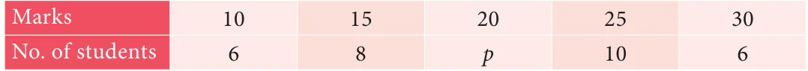
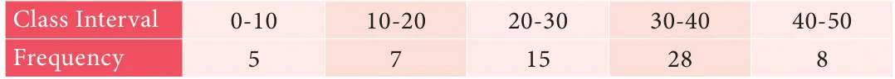

\(\sum _{i}=_{1} \frac{xi}{3}\) \(x3^{1} + x3^{2} + x3^{3} + x3^{4} + x3^{5} + x3^{6} + x3^{7}\)
\(7 = 7\)
\sum xi
\(= 21 = \frac{210}{21} = 10\)
i=1
Aliter
If Y is the set of values obtained by dividing each value of X by 3.
Then, \(= = =\) .
The average mark of 25 students was found to be 78.4. Later on, it
was found that score of 96 was misread as 69. Find the correct mean of the marks.
Solution
Given that the total number of students \(n = 25\), \(X = 78 4\). Progress Check So, Incorrect 78 4. 1960 There are four numbers. If we leave out any one Correct incorrect wrong entry correct entry number, the average of the 1960 1987 remaining three numbers will be 45, 60, 65 or 70. Correct \(\frac{correctx}{n} = \frac{1987}{25} = 79 48\). What is the average of all four numbers?

- 1.In a week, temperature of a certain place is measured during winter are as follows
26 C, 24 C, 28 C, 31 C, 30 C, 26 C, 24 C. Find the mean temperature of the week.
- 2.The mean weight of 4 members of a family is 60kg.Three of them have the weight
56kg, 68kg and 72kg respectively. Find the weight of the fourth member.
- 3.In a class test in mathematics, 10 students scored 75 marks, 12 students scored 60
marks, 8 students scored 40 marks and 3 students scored 30 marks. Find the mean of their score.
- 4.In a research laboratory scientists treated 6 mice with lung cancer using natural
medicine. Ten days later, they measured the volume of the tumor in each mouse and given the results in the table.

Find the mean.
- 5.If the mean of the following data is 20.2, then find the value of p

- 6.In the class, weight of students is measured for the class records. Calculate mean
weight of the class students using Direct method.

- 7.Calculate the mean of the following distribution using Assumed Mean Method:

- 8.Find the Arithmetic Mean of the following data using Step Deviation Method:

Median
The arithmetic mean is typical of the data because it ‘balances’ the numbers; it is the number in the ‘middle’, pulled up by large values and pulled down by smaller values.
Suppose four people of an office have incomes of `5000, `6000, `7000 and `8000.
5000+ 6000+ 7000+8000
Their mean income can be calculated as _{4} which gives `6500. If a fifth person with an income of ` 29000 is added to this group, then the arithmetic mean
of all the five would be \(_{5} = \frac{55000}{5} =\) `11000. Can one say that the average income of `11000 truly represents the income status of the individuals in the office? Is it not, misleading? The problem here is that an extreme score affects the Mean and can move the mean away from what would generally be considered the central area.
5000+ 6000+ 7000+8000+ 29000
In such situations, we need a different type of average to provide reasonable answers.